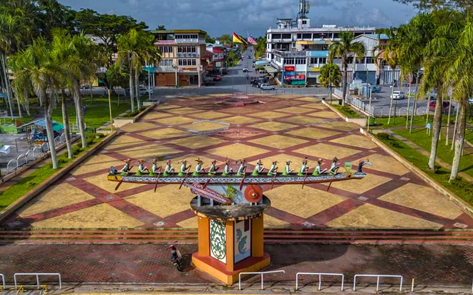

|
Name : ONG HAN LIN
Age : 12/02/2001 (20 years old) Live : Baram |

|
| Now I study in Politeknik Mukah Sarawak(PMU) | |
|
||||
|---|---|---|---|---|
|
|
||||
| Marudi also can called it Baram. Although Marudi is a city like a small village, it can be said to be an unknown paradise. However, we have a very good culture and history here. Dragon boat races are held every four years, but many people will come here. In addition to watching the game, they will come to eat our local food. The most famous delicacy in Marudi is kuew tiaw, and the people who have eaten it have endless aftertastes! |  |

|
Marudi Kuew Tiaw is the best in Malaysia. Our Kuew Tiaw has spread to Taiwan. Almost all restaurants in Marudi are buying. |
| If you want to buy my Kuew Teow, you can CLICK HERE to buy. (CLICK HERE) |